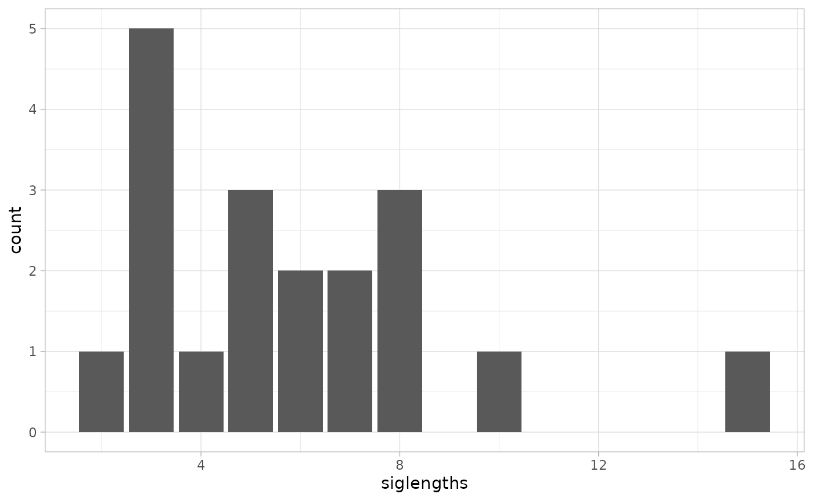
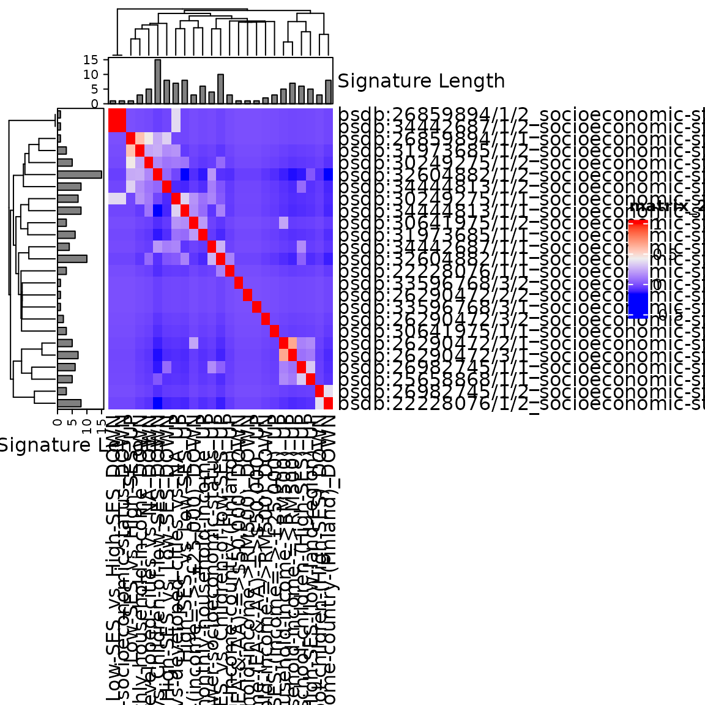
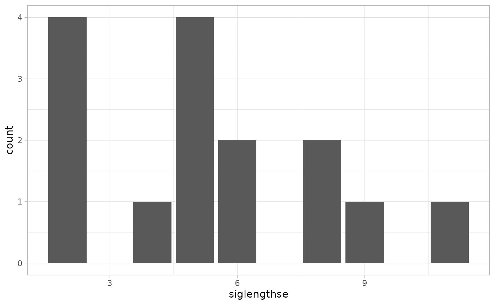
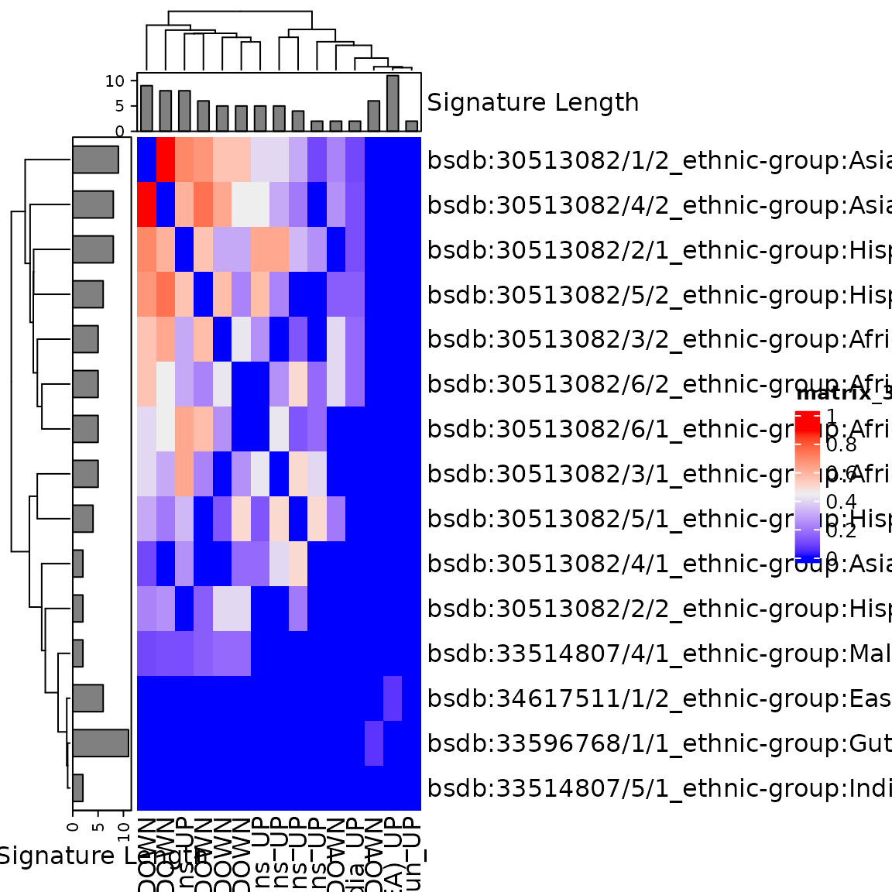
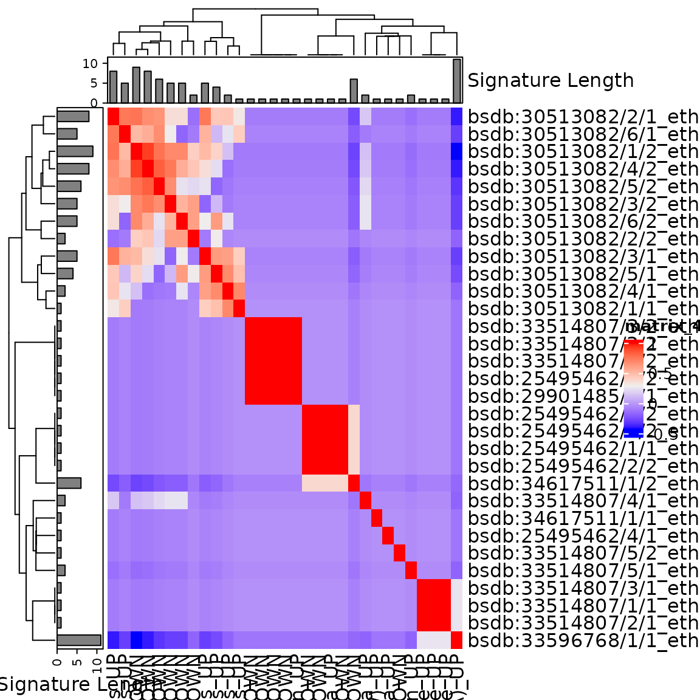

capstoneanalysis_ifeanyi.RmdTo assess commonality or heterogeneity in socioeconomic and ethnic patterning of the fecal microbiome in studies undertaken in various parts of the world, through cluster analysis of results on differentially abundant taxa.
creating frequency tables of how many signatures each microbial taxon (species, genus, or other rank) has been reported – by race/ethnicity separately, by SES separately, and for all studies combined.
cluster analysis of the signatures. Similarity between all pairs of signatures will be calculated using Jaccard Distance, to create a distance matrix. This distance matrix will be used for hierarchical clustering, to identify subgroups of similar signatures. This analysis will be performed separately for signatures of increased abundance and of decreased abundance (in low SES and non-white/Caucasian ethnicity) repeated using Semantic Similarity as an alternative measure of signature similarity, in sensitivity analysis.
Common and distinct effects of SES and race/ethnicity on the gut microbiome will be identified using meta-regression for the most identified taxa. Specifically, the signature will be the unit of analysis, with the presence or absence of the taxon in each study coded as a 0/1 binary variable in a regression analysis.
This is not evaluated, run manually if needed.
if (!require("BiocManager", quietly = TRUE))
install.packages("BiocManager")
BiocManager::install()
BiocManager::version()
BiocManager::install("remotes", dependencies = TRUE)
BiocManager::install("waldronlab/bugSigSimple")
BiocManager::install("curatedMetagenomicData")
devtools::install_github("waldronlab/BugSigDBStats")
devtools::install_github("waldronlab/bugsigdbr")
dat <- bugsigdbr::importBugSigDB(version = 'devel', cache = FALSE) #11/27/2022
dim(dat)## [1] 7115 50
dat.sub <- subsetByCurator(dat, "Kaluifeanyi101") %>%
dplyr::filter(`Body site` == "Feces") %>%
mutate(`Body site` = tolower(`Body site`)) %>%
mutate(`Condition` = tolower(`Condition`))
table(dat.sub[,"Condition"])##
## ethnic group
## 30
## ethnic group,gut microbiome measurement
## 1
## ethnic group,place of residence measurement
## 2
## ethnic group,socioeconomic status
## 2
## gut microbiome measurement
## 4
## seasonal gut microbiome measurement
## 2
## socioeconomic status
## 23
bugSigSimple::createStudyTable(dat.sub) %>%
kbl() %>%
kable_styling()| Study | Condition | Cases | Controls | Study Design |
|---|---|---|---|---|
| Amaruddin 2020 | gut microbiome measurement | 74 | 66 | cross-sectional observational, not case-control |
| Ang 2021 | ethnic group | 22 | 24 | cross-sectional observational, not case-control |
| Balakrishnan 2021 | ethnic group,gut microbiome measurement | 30 | 30 | cross-sectional observational, not case-control |
| Bowyer 2019 | socioeconomic status | 342 | 457 | cross-sectional observational, not case-control |
| Brooks 2018 | ethnic group | 88 | 1237 | cross-sectional observational, not case-control |
| Carson 2018 | ethnic group | 47 | 33 | cross-sectional observational, not case-control |
| Chong 2015 | socioeconomic status | 20 | 24 | cross-sectional observational, not case-control |
| De 2010 | ethnic group,place of residence measurement | 14 | 15 | cross-sectional observational, not case-control |
| Dwiyanto 2021 | ethnic group | 54 | 65 | cross-sectional observational, not case-control |
| Escobar 2014 | ethnic group | 30 | 54 | cross-sectional observational, not case-control |
| Greenhill 2015 | socioeconomic status | 86 | 29 | cross-sectional observational, not case-control |
| He 2018 | socioeconomic status | 7009 | NA | cross-sectional observational, not case-control |
| Kortekangas 2020 | seasonal gut microbiome measurement | NA | NA | prospective cohort |
| Lapidot 2021 | socioeconomic status | 70 | 69 | cross-sectional observational, not case-control |
| Levin 2016 | gut microbiome measurement | 168 | 130 | prospective cohort |
| Lewis 2021 | socioeconomic status | NA | NA | cross-sectional observational, not case-control |
| Lin 2013 | ethnic group,socioeconomic status | 6 | 4 | cross-sectional observational, not case-control |
| Mello 2016 | socioeconomic status | 100 | 30 | cross-sectional observational, not case-control |
| Miller 2016 | socioeconomic status | NA | 44 | cross-sectional observational, not case-control |
| Ramos 2020 | socioeconomic status | NA | NA | cross-sectional observational, not case-control |
| kowiak 2012 | socioeconomic status | 44 | 31 | cross-sectional observational, not case-control |
## [1] 23 50
bugSigSimple::createTaxonTable(dat.sub_SES) %>%
kbl() %>%
kable_styling()| Taxon Name | Taxonomic Level | total_signatures | increased_signatures | decreased_signatures | Binomial Test pval | kingdom | phylum | class | order | family | genus | species | n_signatures | metaphlan_name |
|---|---|---|---|---|---|---|---|---|---|---|---|---|---|---|
| Bacteroidota | phylum | 4 | 4 | 0 | 0.12 | Bacteria | Bacteroidota | NA | NA | NA | NA | NA | 16 | k__Bacteria|p__Bacteroidota |
| Prevotella | genus | 4 | 1 | 3 | 0.63 | Bacteria | Bacteroidota | Bacteroidia | Bacteroidales | Prevotellaceae | Prevotella | NA | 4 | k__Bacteria|p__Bacteroidota|c__Bacteroidia|o__Bacteroidales|f__Prevotellaceae|g__Prevotella |
| Rikenellaceae | family | 4 | 3 | 1 | 0.63 | Bacteria | Bacteroidota | Bacteroidia | Bacteroidales | Rikenellaceae | NA | NA | 5 | k__Bacteria|p__Bacteroidota|c__Bacteroidia|o__Bacteroidales|f__Rikenellaceae |
| Eubacterium | genus | 3 | 2 | 1 | 1.00 | Bacteria | Bacillota | Clostridia | Eubacteriales | Eubacteriaceae | Eubacterium | NA | 3 | k__Bacteria|p__Bacillota|c__Clostridia|o__Eubacteriales|f__Eubacteriaceae|g__Eubacterium |
| Ruminococcus | genus | 3 | 2 | 1 | 1.00 | Bacteria | Bacillota | Clostridia | Eubacteriales | Oscillospiraceae | Ruminococcus | NA | 3 | k__Bacteria|p__Bacillota|c__Clostridia|o__Eubacteriales|f__Oscillospiraceae|g__Ruminococcus |
| Bacteroides | genus | 3 | 1 | 2 | 1.00 | Bacteria | Bacteroidota | Bacteroidia | Bacteroidales | Bacteroidaceae | Bacteroides | NA | 4 | k__Bacteria|p__Bacteroidota|c__Bacteroidia|o__Bacteroidales|f__Bacteroidaceae|g__Bacteroides |
| Deltaproteobacteria | class | 2 | 2 | 0 | 0.50 | Bacteria | Deltaproteobacteria | NA | NA | NA | NA | NA | 2 | k__Bacteria|c__Deltaproteobacteria |
| Bacillota | phylum | 2 | 2 | 0 | 0.50 | Bacteria | Bacillota | NA | NA | NA | NA | NA | 18 | k__Bacteria|p__Bacillota |
| Eubacteriales | order | 2 | 1 | 1 | 1.00 | Bacteria | Bacillota | Clostridia | Eubacteriales | NA | NA | NA | 12 | k__Bacteria|p__Bacillota|c__Clostridia|o__Eubacteriales |
| Clostridium perfringens | species | 2 | 0 | 2 | 0.50 | Bacteria | Bacillota | Clostridia | Eubacteriales | Clostridiaceae | Clostridium | Clostridium perfringens | 2 | k__Bacteria|p__Bacillota|c__Clostridia|o__Eubacteriales|f__Clostridiaceae|g__Clostridium|s__Clostridium perfringens |
## [1] 30 50
bugSigSimple::createTaxonTable(dat.sub_ethnic) %>%
kbl() %>%
kable_styling()| Taxon Name | Taxonomic Level | total_signatures | increased_signatures | decreased_signatures | Binomial Test pval | kingdom | phylum | class | order | family | genus | species | n_signatures | metaphlan_name |
|---|---|---|---|---|---|---|---|---|---|---|---|---|---|---|
| Eubacteriales | order | 7 | 2 | 5 | 0.450 | Bacteria | Bacillota | Clostridia | Eubacteriales | NA | NA | NA | 9 | k__Bacteria|p__Bacillota|c__Clostridia|o__Eubacteriales |
| Coriobacteriaceae | family | 6 | 2 | 4 | 0.690 | Bacteria | Actinomycetota | Coriobacteriia | Coriobacteriales | Coriobacteriaceae | NA | NA | 6 | k__Bacteria|p__Actinomycetota|c__Coriobacteriia|o__Coriobacteriales|f__Coriobacteriaceae |
| Christensenellaceae | family | 6 | 1 | 5 | 0.220 | Bacteria | Bacillota | Clostridia | Christensenellales | Christensenellaceae | NA | NA | 6 | k__Bacteria|p__Bacillota|c__Clostridia|o__Christensenellales|f__Christensenellaceae |
| Peptococcaceae | family | 6 | 3 | 3 | 1.000 | Bacteria | Bacillota | Clostridia | Eubacteriales | Peptococcaceae | NA | NA | 6 | k__Bacteria|p__Bacillota|c__Clostridia|o__Eubacteriales|f__Peptococcaceae |
| Veillonella | genus | 6 | 6 | 0 | 0.031 | Bacteria | Bacillota | Negativicutes | Veillonellales | Veillonellaceae | Veillonella | NA | 6 | k__Bacteria|p__Bacillota|c__Negativicutes|o__Veillonellales|f__Veillonellaceae|g__Veillonella |
| Odoribacteraceae | family | 6 | 3 | 3 | 1.000 | Bacteria | Bacteroidota | Bacteroidia | Bacteroidales | Odoribacteraceae | NA | NA | 6 | k__Bacteria|p__Bacteroidota|c__Bacteroidia|o__Bacteroidales|f__Odoribacteraceae |
| Odoribacter | genus | 6 | 3 | 3 | 1.000 | Bacteria | Bacteroidota | Bacteroidia | Bacteroidales | Odoribacteraceae | Odoribacter | NA | 6 | k__Bacteria|p__Bacteroidota|c__Bacteroidia|o__Bacteroidales|f__Odoribacteraceae|g__Odoribacter |
| Rikenellaceae | family | 6 | 2 | 4 | 0.690 | Bacteria | Bacteroidota | Bacteroidia | Bacteroidales | Rikenellaceae | NA | NA | 6 | k__Bacteria|p__Bacteroidota|c__Bacteroidia|o__Bacteroidales|f__Rikenellaceae |
| Victivallaceae | family | 6 | 4 | 2 | 0.690 | Bacteria | Lentisphaerota | Lentisphaeria | Victivallales | Victivallaceae | NA | NA | 6 | k__Bacteria|p__Lentisphaerota|c__Lentisphaeria|o__Victivallales|f__Victivallaceae |
| Verrucomicrobiaceae | family | 6 | 0 | 6 | 0.031 | Bacteria | Verrucomicrobiota | Verrucomicrobiia | Verrucomicrobiales | Verrucomicrobiaceae | NA | NA | 6 | k__Bacteria|p__Verrucomicrobiota|c__Verrucomicrobiia|o__Verrucomicrobiales|f__Verrucomicrobiaceae |
bugSigSimple::createTaxonTable(dat.sub, n = 50) %>%
kbl() %>%
kable_styling()| Taxon Name | Taxonomic Level | total_signatures | increased_signatures | decreased_signatures | Binomial Test pval | kingdom | phylum | class | order | family | genus | species | n_signatures | metaphlan_name |
|---|---|---|---|---|---|---|---|---|---|---|---|---|---|---|
| Prevotella | genus | 12 | 7 | 5 | 0.770 | Bacteria | Bacteroidota | Bacteroidia | Bacteroidales | Prevotellaceae | Prevotella | NA | 13 | k__Bacteria|p__Bacteroidota|c__Bacteroidia|o__Bacteroidales|f__Prevotellaceae|g__Prevotella |
| Eubacteriales | order | 10 | 4 | 6 | 0.750 | Bacteria | Bacillota | Clostridia | Eubacteriales | NA | NA | NA | 32 | k__Bacteria|p__Bacillota|c__Clostridia|o__Eubacteriales |
| Rikenellaceae | family | 10 | 5 | 5 | 1.000 | Bacteria | Bacteroidota | Bacteroidia | Bacteroidales | Rikenellaceae | NA | NA | 12 | k__Bacteria|p__Bacteroidota|c__Bacteroidia|o__Bacteroidales|f__Rikenellaceae |
| Bacteroides | genus | 9 | 3 | 6 | 0.510 | Bacteria | Bacteroidota | Bacteroidia | Bacteroidales | Bacteroidaceae | Bacteroides | NA | 14 | k__Bacteria|p__Bacteroidota|c__Bacteroidia|o__Bacteroidales|f__Bacteroidaceae|g__Bacteroides |
| Coriobacteriaceae | family | 7 | 2 | 5 | 0.450 | Bacteria | Actinomycetota | Coriobacteriia | Coriobacteriales | Coriobacteriaceae | NA | NA | 9 | k__Bacteria|p__Actinomycetota|c__Coriobacteriia|o__Coriobacteriales|f__Coriobacteriaceae |
| Bacillota | phylum | 7 | 3 | 4 | 1.000 | Bacteria | Bacillota | NA | NA | NA | NA | NA | 47 | k__Bacteria|p__Bacillota |
| Ruminococcus | genus | 7 | 4 | 3 | 1.000 | Bacteria | Bacillota | Clostridia | Eubacteriales | Oscillospiraceae | Ruminococcus | NA | 7 | k__Bacteria|p__Bacillota|c__Clostridia|o__Eubacteriales|f__Oscillospiraceae|g__Ruminococcus |
| Veillonella | genus | 7 | 7 | 0 | 0.016 | Bacteria | Bacillota | Negativicutes | Veillonellales | Veillonellaceae | Veillonella | NA | 7 | k__Bacteria|p__Bacillota|c__Negativicutes|o__Veillonellales|f__Veillonellaceae|g__Veillonella |
| Odoribacter | genus | 7 | 4 | 3 | 1.000 | Bacteria | Bacteroidota | Bacteroidia | Bacteroidales | Odoribacteraceae | Odoribacter | NA | 7 | k__Bacteria|p__Bacteroidota|c__Bacteroidia|o__Bacteroidales|f__Odoribacteraceae|g__Odoribacter |
| Christensenellaceae | family | 6 | 1 | 5 | 0.220 | Bacteria | Bacillota | Clostridia | Christensenellales | Christensenellaceae | NA | NA | 6 | k__Bacteria|p__Bacillota|c__Clostridia|o__Christensenellales|f__Christensenellaceae |
| Clostridium | genus | 6 | 4 | 2 | 0.690 | Bacteria | Bacillota | Clostridia | Eubacteriales | Clostridiaceae | Clostridium | NA | 8 | k__Bacteria|p__Bacillota|c__Clostridia|o__Eubacteriales|f__Clostridiaceae|g__Clostridium |
| Eubacterium | genus | 6 | 4 | 2 | 0.690 | Bacteria | Bacillota | Clostridia | Eubacteriales | Eubacteriaceae | Eubacterium | NA | 6 | k__Bacteria|p__Bacillota|c__Clostridia|o__Eubacteriales|f__Eubacteriaceae|g__Eubacterium |
| Peptococcaceae | family | 6 | 3 | 3 | 1.000 | Bacteria | Bacillota | Clostridia | Eubacteriales | Peptococcaceae | NA | NA | 6 | k__Bacteria|p__Bacillota|c__Clostridia|o__Eubacteriales|f__Peptococcaceae |
| Odoribacteraceae | family | 6 | 3 | 3 | 1.000 | Bacteria | Bacteroidota | Bacteroidia | Bacteroidales | Odoribacteraceae | NA | NA | 7 | k__Bacteria|p__Bacteroidota|c__Bacteroidia|o__Bacteroidales|f__Odoribacteraceae |
| Victivallaceae | family | 6 | 4 | 2 | 0.690 | Bacteria | Lentisphaerota | Lentisphaeria | Victivallales | Victivallaceae | NA | NA | 6 | k__Bacteria|p__Lentisphaerota|c__Lentisphaeria|o__Victivallales|f__Victivallaceae |
| Verrucomicrobiaceae | family | 6 | 0 | 6 | 0.031 | Bacteria | Verrucomicrobiota | Verrucomicrobiia | Verrucomicrobiales | Verrucomicrobiaceae | NA | NA | 6 | k__Bacteria|p__Verrucomicrobiota|c__Verrucomicrobiia|o__Verrucomicrobiales|f__Verrucomicrobiaceae |
| Bacteroidota | phylum | 5 | 5 | 0 | 0.062 | Bacteria | Bacteroidota | NA | NA | NA | NA | NA | 41 | k__Bacteria|p__Bacteroidota |
| Bifidobacterium | genus | 4 | 3 | 1 | 0.630 | Bacteria | Actinomycetota | Actinomycetes | Bifidobacteriales | Bifidobacteriaceae | Bifidobacterium | NA | 8 | k__Bacteria|p__Actinomycetota|c__Actinomycetes|o__Bifidobacteriales|f__Bifidobacteriaceae|g__Bifidobacterium |
| Bifidobacterium longum | species | 4 | 3 | 1 | 0.630 | Bacteria | Actinomycetota | Actinomycetes | Bifidobacteriales | Bifidobacteriaceae | Bifidobacterium | Bifidobacterium longum | 4 | k__Bacteria|p__Actinomycetota|c__Actinomycetes|o__Bifidobacteriales|f__Bifidobacteriaceae|g__Bifidobacterium|s__Bifidobacterium longum |
| Oscillospiraceae | family | 4 | 4 | 0 | 0.120 | Bacteria | Bacillota | Clostridia | Eubacteriales | Oscillospiraceae | NA | NA | 19 | k__Bacteria|p__Bacillota|c__Clostridia|o__Eubacteriales|f__Oscillospiraceae |
| Faecalibacterium | genus | 4 | 3 | 1 | 0.630 | Bacteria | Bacillota | Clostridia | Eubacteriales | Oscillospiraceae | Faecalibacterium | NA | 7 | k__Bacteria|p__Bacillota|c__Clostridia|o__Eubacteriales|f__Oscillospiraceae|g__Faecalibacterium |
| Faecalibacterium prausnitzii | species | 4 | 2 | 2 | 1.000 | Bacteria | Bacillota | Clostridia | Eubacteriales | Oscillospiraceae | Faecalibacterium | Faecalibacterium prausnitzii | 4 | k__Bacteria|p__Bacillota|c__Clostridia|o__Eubacteriales|f__Oscillospiraceae|g__Faecalibacterium|s__Faecalibacterium prausnitzii |
| Bifidobacterium adolescentis | species | 3 | 1 | 2 | 1.000 | Bacteria | Actinomycetota | Actinomycetes | Bifidobacteriales | Bifidobacteriaceae | Bifidobacterium | Bifidobacterium adolescentis | 3 | k__Bacteria|p__Actinomycetota|c__Actinomycetes|o__Bifidobacteriales|f__Bifidobacteriaceae|g__Bifidobacterium|s__Bifidobacterium adolescentis |
| Bifidobacterium bifidum | species | 3 | 2 | 1 | 1.000 | Bacteria | Actinomycetota | Actinomycetes | Bifidobacteriales | Bifidobacteriaceae | Bifidobacterium | Bifidobacterium bifidum | 3 | k__Bacteria|p__Actinomycetota|c__Actinomycetes|o__Bifidobacteriales|f__Bifidobacteriaceae|g__Bifidobacterium|s__Bifidobacterium bifidum |
| Lactobacillus | genus | 3 | 2 | 1 | 1.000 | Bacteria | Bacillota | Bacilli | Lactobacillales | Lactobacillaceae | Lactobacillus | NA | 4 | k__Bacteria|p__Bacillota|c__Bacilli|o__Lactobacillales|f__Lactobacillaceae|g__Lactobacillus |
| Lachnospiraceae | family | 3 | 2 | 1 | 1.000 | Bacteria | Bacillota | Clostridia | Lachnospirales | Lachnospiraceae | NA | NA | 12 | k__Bacteria|p__Bacillota|c__Clostridia|o__Lachnospirales|f__Lachnospiraceae |
| Blautia | genus | 3 | 2 | 1 | 1.000 | Bacteria | Bacillota | Clostridia | Lachnospirales | Lachnospiraceae | Blautia | NA | 4 | k__Bacteria|p__Bacillota|c__Clostridia|o__Lachnospirales|f__Lachnospiraceae|g__Blautia |
| Bacteroides fragilis | species | 3 | 1 | 2 | 1.000 | Bacteria | Bacteroidota | Bacteroidia | Bacteroidales | Bacteroidaceae | Bacteroides | Bacteroides fragilis | 3 | k__Bacteria|p__Bacteroidota|c__Bacteroidia|o__Bacteroidales|f__Bacteroidaceae|g__Bacteroides|s__Bacteroides fragilis |
| Bacteroides thetaiotaomicron | species | 3 | 0 | 3 | 0.250 | Bacteria | Bacteroidota | Bacteroidia | Bacteroidales | Bacteroidaceae | Bacteroides | Bacteroides thetaiotaomicron | 3 | k__Bacteria|p__Bacteroidota|c__Bacteroidia|o__Bacteroidales|f__Bacteroidaceae|g__Bacteroides|s__Bacteroides thetaiotaomicron |
| Parabacteroides | genus | 3 | 3 | 0 | 0.250 | Bacteria | Bacteroidota | Bacteroidia | Bacteroidales | Tannerellaceae | Parabacteroides | NA | 3 | k__Bacteria|p__Bacteroidota|c__Bacteroidia|o__Bacteroidales|f__Tannerellaceae|g__Parabacteroides |
| Enterobacteriaceae | family | 3 | 1 | 2 | 1.000 | Bacteria | Pseudomonadota | Gammaproteobacteria | Enterobacterales | Enterobacteriaceae | NA | NA | 7 | k__Bacteria|p__Pseudomonadota|c__Gammaproteobacteria|o__Enterobacterales|f__Enterobacteriaceae |
| Deltaproteobacteria | class | 2 | 2 | 0 | 0.500 | Bacteria | Deltaproteobacteria | NA | NA | NA | NA | NA | 2 | k__Bacteria|c__Deltaproteobacteria |
| Actinomycetota | phylum | 2 | 2 | 0 | 0.500 | Bacteria | Actinomycetota | NA | NA | NA | NA | NA | 21 | k__Bacteria|p__Actinomycetota |
| Bifidobacterium breve | species | 2 | 1 | 1 | 1.000 | Bacteria | Actinomycetota | Actinomycetes | Bifidobacteriales | Bifidobacteriaceae | Bifidobacterium | Bifidobacterium breve | 2 | k__Bacteria|p__Actinomycetota|c__Actinomycetes|o__Bifidobacteriales|f__Bifidobacteriaceae|g__Bifidobacterium|s__Bifidobacterium breve |
| Bifidobacterium catenulatum | species | 2 | 1 | 1 | 1.000 | Bacteria | Actinomycetota | Actinomycetes | Bifidobacteriales | Bifidobacteriaceae | Bifidobacterium | Bifidobacterium catenulatum | 2 | k__Bacteria|p__Actinomycetota|c__Actinomycetes|o__Bifidobacteriales|f__Bifidobacteriaceae|g__Bifidobacterium|s__Bifidobacterium catenulatum |
| Bifidobacterium pseudocatenulatum | species | 2 | 1 | 1 | 1.000 | Bacteria | Actinomycetota | Actinomycetes | Bifidobacteriales | Bifidobacteriaceae | Bifidobacterium | Bifidobacterium pseudocatenulatum | 2 | k__Bacteria|p__Actinomycetota|c__Actinomycetes|o__Bifidobacteriales|f__Bifidobacteriaceae|g__Bifidobacterium|s__Bifidobacterium pseudocatenulatum |
| Bifidobacterium ruminantium | species | 2 | 1 | 1 | 1.000 | Bacteria | Actinomycetota | Actinomycetes | Bifidobacteriales | Bifidobacteriaceae | Bifidobacterium | Bifidobacterium ruminantium | 2 | k__Bacteria|p__Actinomycetota|c__Actinomycetes|o__Bifidobacteriales|f__Bifidobacteriaceae|g__Bifidobacterium|s__Bifidobacterium ruminantium |
| Atopobiaceae | family | 2 | 1 | 1 | 1.000 | Bacteria | Actinomycetota | Coriobacteriia | Coriobacteriales | Atopobiaceae | NA | NA | 2 | k__Bacteria|p__Actinomycetota|c__Coriobacteriia|o__Coriobacteriales|f__Atopobiaceae |
| Slackia | genus | 2 | 2 | 0 | 0.500 | Bacteria | Actinomycetota | Coriobacteriia | Eggerthellales | Eggerthellaceae | Slackia | NA | 2 | k__Bacteria|p__Actinomycetota|c__Coriobacteriia|o__Eggerthellales|f__Eggerthellaceae|g__Slackia |
| Staphylococcus | genus | 2 | 1 | 1 | 1.000 | Bacteria | Bacillota | Bacilli | Bacillales | Staphylococcaceae | Staphylococcus | NA | 3 | k__Bacteria|p__Bacillota|c__Bacilli|o__Bacillales|f__Staphylococcaceae|g__Staphylococcus |
| Enterococcus | genus | 2 | 2 | 0 | 0.500 | Bacteria | Bacillota | Bacilli | Lactobacillales | Enterococcaceae | Enterococcus | NA | 2 | k__Bacteria|p__Bacillota|c__Bacilli|o__Lactobacillales|f__Enterococcaceae|g__Enterococcus |
| Lactococcus | genus | 2 | 1 | 1 | 1.000 | Bacteria | Bacillota | Bacilli | Lactobacillales | Streptococcaceae | Lactococcus | NA | 2 | k__Bacteria|p__Bacillota|c__Bacilli|o__Lactobacillales|f__Streptococcaceae|g__Lactococcus |
| Clostridiaceae | family | 2 | 0 | 2 | 0.500 | Bacteria | Bacillota | Clostridia | Eubacteriales | Clostridiaceae | NA | NA | 11 | k__Bacteria|p__Bacillota|c__Clostridia|o__Eubacteriales|f__Clostridiaceae |
| Clostridium perfringens | species | 2 | 0 | 2 | 0.500 | Bacteria | Bacillota | Clostridia | Eubacteriales | Clostridiaceae | Clostridium | Clostridium perfringens | 2 | k__Bacteria|p__Bacillota|c__Clostridia|o__Eubacteriales|f__Clostridiaceae|g__Clostridium|s__Clostridium perfringens |
| Anaerotruncus | genus | 2 | 1 | 1 | 1.000 | Bacteria | Bacillota | Clostridia | Eubacteriales | Oscillospiraceae | Anaerotruncus | NA | 2 | k__Bacteria|p__Bacillota|c__Clostridia|o__Eubacteriales|f__Oscillospiraceae|g__Anaerotruncus |
| Oscillospira | genus | 2 | 1 | 1 | 1.000 | Bacteria | Bacillota | Clostridia | Eubacteriales | Oscillospiraceae | Oscillospira | NA | 2 | k__Bacteria|p__Bacillota|c__Clostridia|o__Eubacteriales|f__Oscillospiraceae|g__Oscillospira |
| butyrate-producing bacterium M21/2 | species | 2 | 1 | 1 | 1.000 | Bacteria | Bacillota | Clostridia | Eubacteriales | butyrate-producing bacterium M21/2 | NA | NA | 2 | k__Bacteria|p__Bacillota|c__Clostridia|o__Eubacteriales|s__butyrate-producing bacterium M21/2 |
| Clostridiales bacterium | species | 2 | 1 | 1 | 1.000 | Bacteria | Bacillota | Clostridia | Eubacteriales | Clostridiales bacterium | NA | NA | 2 | k__Bacteria|p__Bacillota|c__Clostridia|o__Eubacteriales|s__Clostridiales bacterium |
| Anaerostipes | genus | 2 | 2 | 0 | 0.500 | Bacteria | Bacillota | Clostridia | Lachnospirales | Lachnospiraceae | Anaerostipes | NA | 2 | k__Bacteria|p__Bacillota|c__Clostridia|o__Lachnospirales|f__Lachnospiraceae|g__Anaerostipes |
| Butyrivibrio | genus | 2 | 2 | 0 | 0.500 | Bacteria | Bacillota | Clostridia | Lachnospirales | Lachnospiraceae | Butyrivibrio | NA | 2 | k__Bacteria|p__Bacillota|c__Clostridia|o__Lachnospirales|f__Lachnospiraceae|g__Butyrivibrio |
allsigs <- bugsigdbr::getSignatures(dat.sub_SES , tax.id.type = "taxname")
allsigs <- allsigs[sapply(allsigs, length) > 1] #require length > 1
length(allsigs)## [1] 17
mydists <- BugSigDBStats::calcPairwiseOverlaps(allsigs)
dim(mydists)## [1] 24 8
library(ggplot2)
siglengths <- sapply(allsigs, length)
siglengths.df <- data.frame(siglengths = siglengths)
ggplot(siglengths.df, aes(x=siglengths)) +
geom_bar()
table(siglengths)## siglengths
## 2 3 4 5 6 7 8
## 1 5 1 3 2 2 3
jmat <- BugSigDBStats::calcJaccardSimilarity(allsigs)##Create a Clustered heatmap
library(ComplexHeatmap)
ha <- HeatmapAnnotation(`Signature Length` = anno_barplot(siglengths))
hr <- rowAnnotation(
`Signature Length` = anno_barplot(siglengths)
)
hm <- Heatmap(
jmat,
top_annotation = ha,
# left_annotation = hr,
# column_names_max_height = unit(23, "cm"),
column_names_rot = 45,
# row_names_max_width = unit(15, "cm"),
# get rid of study labels
row_labels = sub("bsdb:", "", sub("_.+", "", rownames(jmat)), fixed = TRUE),
column_labels = sub("bsdb:", "", sub("_.+", "", colnames(jmat)), fixed = TRUE)
)
hm
dat_withsigs <- filter(dat.sub_SES , !is.na(dat.sub_SES$`NCBI Taxonomy IDs`))
sigs <- bugsigdbr::getSignatures(dat_withsigs, tax.id.type = "taxname")
cmat <- t(safe::getCmatrix(sigs, as.matrix = TRUE, min.size = 0, prune = FALSE))## WARNING: rows are sorted elements of keyword.list
## 23 categories formed
cdf <- data.frame(cmat, stringsAsFactors = FALSE, check.names = FALSE)
cdf <- cbind(dat_withsigs, cdf)
dim(cdf)## [1] 23 117An arbitrary example of meta-regression:
fit <-
glm(
Prevotella ~ `Location of subjects` + `Sequencing type` + `Abundance in Group 1`,
family = binomial(link = "logit"),
data = cdf
)
summary(fit)##
## Call:
## glm(formula = Prevotella ~ `Location of subjects` + `Sequencing type` +
## `Abundance in Group 1`, family = binomial(link = "logit"),
## data = cdf)
##
## Coefficients:
## Estimate Std. Error z value
## (Intercept) -1.989e+01 1.183e+04 -0.002
## `Location of subjects`China 2.087e+01 1.183e+04 0.002
## `Location of subjects`Finland,Malawi 1.953e+01 2.048e+04 0.001
## `Location of subjects`Israel 2.087e+01 1.183e+04 0.002
## `Location of subjects`Malaysia 1.950e-08 1.448e+04 0.000
## `Location of subjects`Mexico 2.087e+01 1.183e+04 0.002
## `Location of subjects`Papua New Guinea 1.276e+00 2.131e+04 0.000
## `Location of subjects`United Kingdom 1.949e-08 1.672e+04 0.000
## `Location of subjects`United States of America 1.953e+01 1.183e+04 0.002
## `Sequencing type`WMS -1.953e+01 1.183e+04 -0.002
## `Abundance in Group 1`increased -1.954e+00 1.543e+00 -1.267
## Pr(>|z|)
## (Intercept) 0.999
## `Location of subjects`China 0.999
## `Location of subjects`Finland,Malawi 0.999
## `Location of subjects`Israel 0.999
## `Location of subjects`Malaysia 1.000
## `Location of subjects`Mexico 0.999
## `Location of subjects`Papua New Guinea 1.000
## `Location of subjects`United Kingdom 1.000
## `Location of subjects`United States of America 0.999
## `Sequencing type`WMS 0.999
## `Abundance in Group 1`increased 0.205
##
## (Dispersion parameter for binomial family taken to be 1)
##
## Null deviance: 21.254 on 22 degrees of freedom
## Residual deviance: 10.956 on 12 degrees of freedom
## AIC: 32.956
##
## Number of Fisher Scoring iterations: 19
sigcors <- cor(t(cmat))
siglengths <- sapply(sigs, length)
ha <- HeatmapAnnotation(`Signature Length` = anno_barplot(siglengths))
hr <- rowAnnotation(`Signature Length` = anno_barplot(siglengths))
hm <- Heatmap(
sigcors,
top_annotation = ha, left_annotation = hr,
row_names_max_width = unit(.05, "cm"),
column_names_max_height = unit(.1, "cm"),
# row_labels = sub(".+:", "", rownames(sigcors)), ##removing study just to make signature names legible
column_labels = sub(".+:", "", colnames(sigcors))
)
hm
allsige <- bugsigdbr::getSignatures(dat.sub_ethnic , tax.id.type = "taxname")
allsige <- allsige[sapply(allsige, length) > 1] #require length > 1
length(allsige )## [1] 14
mydistse <- BugSigDBStats::calcPairwiseOverlaps(allsige)
dim(mydistse)## [1] 51 8
library(ggplot2)
siglengthse <- sapply(allsige, length)
siglengthse.df <- data.frame(siglengthse = siglengthse)
ggplot(siglengthse.df, aes(x=siglengthse)) +
geom_bar()
table(siglengthse)## siglengthse
## 2 4 5 6 8 9
## 4 1 4 2 2 1
jmate <- BugSigDBStats::calcJaccardSimilarity(allsige)
library(ComplexHeatmap)
hae <- HeatmapAnnotation(`Signature Length` = anno_barplot(siglengthse))
hre <- rowAnnotation(`Signature Length` = anno_barplot(siglengthse))
hme <- Heatmap(
jmate,
top_annotation = hae, left_annotation = hre,
row_names_max_width = unit(.10,"cm"),
column_names_max_height = unit(1.0, "cm"),
# row_labels = sub(".+:", "", rownames(jmate)), #get rid of study labels
column_labels = sub(".+:", "", colnames(jmate))
)
hme
dat_withsigse <- filter(dat.sub_ethnic , !is.na(dat.sub_ethnic$`NCBI Taxonomy IDs`))
sigse <- bugsigdbr::getSignatures(dat_withsigse, tax.id.type = "taxname")
cmate <- t(safe::getCmatrix(sigse, as.matrix = TRUE, min.size = 0, prune = FALSE))## WARNING: rows are sorted elements of keyword.list
## 30 categories formed
cdfe <- data.frame(cmate, stringsAsFactors = FALSE, check.names = FALSE)
cdfe <- cbind(dat_withsigse, cdfe)
colnames(cdfe)[1:25]## [1] "BSDB ID" "Study" "Study design"
## [4] "PMID" "DOI" "URL"
## [7] "Authors list" "Title" "Journal"
## [10] "Year" "Keywords" "Experiment"
## [13] "Location of subjects" "Host species" "Body site"
## [16] "UBERON ID" "Condition" "EFO ID"
## [19] "Group 0 name" "Group 1 name" "Group 1 definition"
## [22] "Group 0 sample size" "Group 1 sample size" "Antibiotics exclusion"
## [25] "Sequencing type"
sigcorse <- cor(t(cmate))
siglengthse <- sapply(sigse, length)
hae <- HeatmapAnnotation(`Signature Length` = anno_barplot(siglengthse))
hre <- rowAnnotation(`Signature Length` = anno_barplot(siglengthse))
hme <- Heatmap(
sigcorse,
top_annotation = hae, left_annotation = hre,
row_names_max_width = unit(.05, "cm"),
column_names_max_height = unit(.1, "cm"),
# row_labels = sub(".+:", "", rownames(sigcors)), ##removing study just to make signature names legible
column_labels = sub(".+:", "", colnames(sigcorse))
)
hme